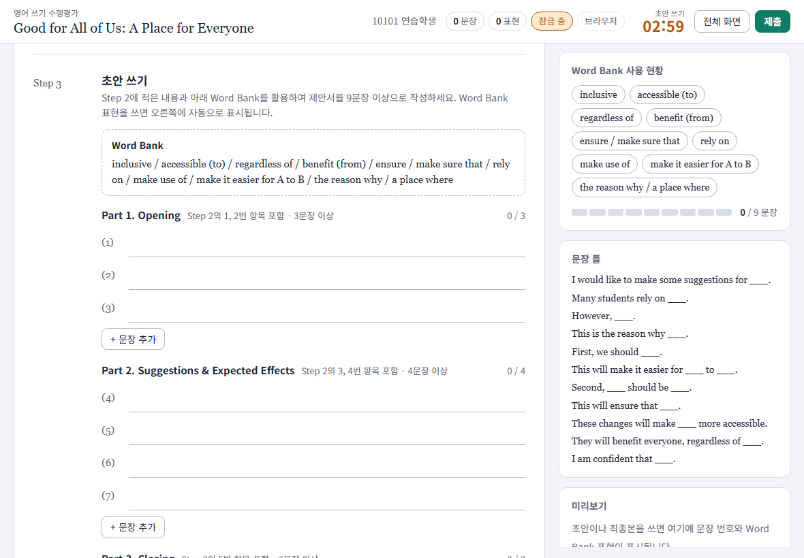

실습: 영어 수행평가 페이지를 내 과목으로
실제 수업에 쓰던 영어 쓰기 수행평가 페이지를 본보기로 씁니다. 학생이 되어 보고, AI와 뜯어보고, 내 과목(지구과학, 일본어, 윤리…) 평가 페이지로 바꿔 봅니다. 실제 수업에 올리는 방법까지 이 페이지에 있습니다.

한눈에 보기
보기
- 체험 페이지 열기
- 학생이 되어 써 보기
- 내용·흐름·동작 메모
뜯어보기
- A 웹 채팅 / B 코딩 도구 고르기
- AI에게 구조 묻기
- 하나 고치고 되돌리기
내 과목으로
- 바꿀 것 정하기
- 계획 받기 → 만들기
- 바꾼 것 정리하기
올리기
- 시트 + Apps Script
- GitHub Pages 주소
- 제출 → 시트에 줄 확인
실제 수업에
- 본보기 폴더 전체 올리기
- 자동 저장·PDF·교사 현황
각 단계 맨 위의 체크리스트를 눌러 가며 따라 하세요. 표시는 이 기기에만 남습니다. 회색 배우는 것은 눌러야 펼쳐집니다.
1. 보기: 학생이 되어 보기
본보기 페이지는 학생이 태블릿에서 영어 글쓰기를 두 번에 나눠 치르고, 제출물이 교사의 구글 드라이브에 PDF와 시트로 쌓이는 페이지입니다.
| 1회차 | 예시 문단 분석 → 브레인스토밍(이때는 검색 허용) → 초안 쓰기(잠금) → 초안 제출 |
|---|---|
| 2회차 | 같은 학번·이름으로 로그인하면 초안이 그대로 열리고(수정 불가), 최종본만 씁니다(잠금) → 제출 |
| 잠금 단계에서 | 붙여넣기와 자동 완성이 막히고, 다른 앱·탭으로 나가면 횟수와 시각이 제출물에 기록됩니다. 단어 사전(단어 하나씩)만 허용됩니다. |
| 선생님 쪽 | 제출물은 반별 폴더에 PDF로, 진행 상황은 시트(총괄·반별 탭)와 교사 현황 화면에 보입니다. |
- 체험 페이지를 열고 아무 학번(예:
10101)과 이름으로 시작합니다. 제한 시간을 조사 2분, 초안 5분, 최종 5분으로 줄여 두었습니다. 조사 단계에서 초안 쓰기 시작을 누릅니다. - 문장을 하나 써 보고, 다른 곳의 글을 붙여넣어 보고, 다른 탭에 다녀옵니다.
- 보면서 세 칸으로 나눠 메모합니다. 3단계에서 그대로 씁니다.
내용 제목, 예시문, Word Bank, 시간. 내 과목이면 무엇으로 바뀔까? 흐름 조사 → 초안 → 최종. 내 과목 평가도 이 순서가 맞을까? 동작 타이머, 붙여넣기 막기, 이탈 기록. 내 과목에도 필요할까, 더 필요한 것은?
로그인 화면 아래 버전 글자 옆에 “연습 모드”라고 나오면 정상입니다. 학번과 이름은 아무것이나 넣어도 됩니다. 같은 학번으로 새로 고쳐 들어가면 2회차(최종본)가 열립니다. 처음부터 다시 하려면 로그인 화면 아래 교사 → PIN 0000 → 데이터 삭제.
2. 뜯어보기: 갈래 고르기
| A. 웹 채팅 | B. 코딩 도구 | |
| 도구 | Gemini(Canvas) 또는 claude.ai | VS Code 안에서 Claude Code 또는 Antigravity CLI(Gemini 쪽) |
| 필요한 것 | 브라우저와 계정 하나. 무료로 됩니다 | 미리 설치와 로그인. Claude Code는 Claude 유료 구독, Antigravity CLI는 구글 계정(무료 한도 있음, Google AI Pro는 넉넉) |
| 뜯어보기 | 영어 수행평가 학생 화면을 작게 새로 만들어 봅니다 | 영어 수행평가 본보기 폴더를 열어 묻고 고칩니다 |
| 내 과목으로 | 내 과목 평가 화면을 대화창에서 새로 만듭니다 | 본보기를 복사해 내 과목으로 고칩니다 |
| 잘하는 것 | 한 파일짜리 화면을 바로 만들고 그 자리에서 봅니다 | 내 PC의 폴더를 직접 읽고 고칩니다. 시험과 배포까지 시킬 수 있습니다 |
| 한계 | 내 PC의 폴더를 못 봅니다. 파일이 여럿이거나 백엔드가 필요하면 내가 복사해 옮겨야 합니다 | 처음 설치가 번거롭습니다. 터미널 화면에 익숙해져야 합니다 |
2-A. 웹 채팅으로 뜯어보기
Gemini나 claude.ai 대화창에서 방금 본 영어 수행평가 학생 화면을 작게 다시 만들어 봅니다. 만들면서 이 페이지가 어떻게 짜여 있는지 알게 됩니다. 설치할 것은 없습니다.
- 대화창을 엽니다. 둘 가운데 하나를 고릅니다.
Gemini gemini.google.com 에 구글 계정으로 들어갑니다. 입력칸 아래의 Canvas 를 눌러 켭니다. 만든 화면이 오른쪽에 열립니다. Claude claude.ai 에 들어갑니다. 따로 켤 것은 없습니다. 화면을 만들어 달라고 하면 오른쪽에 열립니다. > Gemini에게 물어보기 ＋ 도구 Canvas Deep Research배우는 것
웹 채팅은 대화창 옆에 “미리보기 화면”이 있어서, 만든 웹 페이지를 그 자리에서 눌러 볼 수 있습니다. 학교 구글 계정에서 Gemini가 꺼져 있으면 개인 구글 계정이나 claude.ai를 씁니다.
- 계획부터 받습니다. 아래 말을 그대로 넣습니다.
영어 쓰기 수행평가를 학생 태블릿에서 치르는 페이지를 HTML 파일 하나로 만들고 싶어. 코드는 아직 쓰지 말고, 화면에 무엇이 있어야 하는지 정리해 줘. 다음 세 가지로 나눠서. - 내용: 제목, Word Bank, 시간 - 흐름: 쓰기 → 제출 - 동작: 타이머, 붙여넣기 막기, 화면 이탈 기록배우는 것
발표에서 본 “내용, 흐름, 동작”으로 나눠 물으면 답도 그렇게 나뉘어 옵니다. 빠진 것이 있으면 “○○도 넣어 줘”라고 이어서 말합니다.
- 만들게 합니다.
좋아. 이 계획대로 HTML 파일 하나로 만들어 줘. - 제목은 My Dream School, Word Bank 단어 8개, 문장 칸 5개 - 남은 시간 20분 타이머 - 붙여넣기는 막고, 다른 탭에 다녀오면 이탈 횟수를 화면 윗줄에 보여 줘 - 제목, 단어, 시간은 코드 맨 위의 설정 한 곳에 모아 줘배우는 것
오른쪽에 코드가 써지고 화면이 뜹니다. Gemini에서 코드만 보이면 오른쪽 위의 미리보기를 누릅니다. 설정을 한 곳에 모으게 하면 다음에 내용만 바꾸기 쉽습니다.
- 내 눈으로 확인합니다. 미리보기 화면에서 직접 해 봅니다.
- 문장 칸에 영어 문장을 써 봅니다. 타이머가 줄어드는지 봅니다.
- 다른 곳에서 글을 복사해 문장 칸에 붙여넣어 봅니다. 막히는지 봅니다.
- 다른 탭에 갔다가 돌아옵니다. 윗줄의 이탈 횟수가 오르는지 봅니다.
배우는 것
AI가 “만들었습니다”라고 해도 확인은 내가 합니다. 안 되는 것은 본 그대로 말합니다. 예: “붙여넣기가 그대로 들어가. 막아 줘.” 미리보기 창 안에서는 일부 동작이 실제와 다를 수 있습니다.
- 고치고, 되돌려 봅니다.
마음에 안 들면 되돌립니다. 미리보기 위쪽의 이전 버전 단추를 쓰거나, “방금 바꾼 것을 되돌려 줘”라고 합니다.시간을 25분으로, 제목을 "Our School in 2035"로 바꿔 줘. 바꾼 곳만 먼저 짧게 알려 줘.배우는 것
웹 채팅은 고칠 때 파일 전체를 새로 쓰기도 합니다. 그래서 바꾸라고 하지 않은 곳이 바뀌지 않았는지 한 번 더 봅니다.
만든 화면을 내 PC에 파일로 남기려면
미리보기 위쪽의 내려받기(또는 공유 → 내보내기) 단추가 있으면 그것을 씁니다. 없으면 코드 창의 복사 단추로 코드를 복사해 메모장에 붙이고, 다른 이름으로 저장에서 파일 이름을 test.html, 인코딩을 UTF-8로 저장합니다. 저장한 파일을 두 번 누르면 브라우저로 열립니다.
2-B. 코딩 도구로 뜯어보기
방금 본 영어 수행평가 페이지의 본보기 폴더를 VS Code로 열고, 그 안에서 코딩 도구를 켜서 묻고 고칩니다. 코딩 도구 갈래의 준비(터미널, VS Code, 코딩 도구 설치)를 마친 뒤 합니다.
| Claude Code | Antigravity CLI (Gemini 쪽) | |
| 켜는 명령 | claude | agy |
| 폴더 설명서 | CLAUDE.md 를 스스로 읽음 | AGENTS.md 를 읽음. 본보기의 AGENTS.md 는 “CLAUDE.md를 읽어라”라는 안내 |
| 끝내기 | /exit | /quit |
아래 그림과 글은 Claude Code 화면입니다. Antigravity CLI는 화면 글자가 다르지만 순서와 넣을 말은 같습니다. claude 자리에 agy 를 넣으세요.
- 본보기 폴더를 받아 VS Code로 엽니다. PowerShell(Windows 키 →
powershell)에 아래 네 줄을 한꺼번에 붙여넣습니다. 수행평가 페이지 본보기를 문서 폴더에 받아 풀고, VS Code로 엽니다.cd $HOME\Documents irm https://guenhee9474-tech.github.io/teacher-kit/downloads/english-writing-kit.zip -OutFile english-writing-kit.zip Expand-Archive english-writing-kit.zip -DestinationPath . -Force code english-writingVS Code가 열리며 작성자를 신뢰하느냐고 물으면 “예”를 누릅니다. 왼쪽에
docs,CLAUDE.md같은 이름이 보이면 됩니다.Mac에서는 / code 를 모른다고 나오면
Mac은 터미널에 아래를 넣습니다.
cd ~/Documents curl -L -O https://guenhee9474-tech.github.io/teacher-kit/downloads/english-writing-kit.zip unzip -o english-writing-kit.zip open -a "Visual Studio Code" english-writingWindows에서
code를 모른다고 하면, VS Code를 직접 열고 파일 → 폴더 열기에서 문서 → english-writing 을 고릅니다. - VS Code 안의 터미널에서 코딩 도구를 켭니다.
Ctrl+`(숫자 1 왼쪽의 키)를 눌러 아래쪽에 터미널을 열고,claude(Antigravity CLI는agy)를 넣습니다. 메뉴로는 터미널 → 새 터미널입니다.탐색기▸ docs
▸ gas
▸ scripts
▸ tests
CLAUDE.md
README.md왼쪽에서 파일을 누르면 여기에 내용이 보입니다터미널 PS C:\Users\내이름\Documents\english-writing> claude Quick safety check: Is this a project you created or one you trust? ❯ 1. Yes, I trust this folder 2. No, exit배우는 것
Claude Code는 “지금 열린 폴더”를 봅니다. 터미널 앞머리에
english-writing이 보이는지 확인하세요. 왼쪽은 파일 목록, 가운데는 파일 내용, 아래가 Claude Code입니다. 폴더를 믿느냐고 물으면 Yes에서 Enter를 누릅니다. Antigravity CLI도 “Do you trust the contents of this project?”라고 묻습니다. - 읽게 합니다. 아래 말을 그대로 넣습니다.
이 폴더가 무엇을 하는 프로젝트인지, CLAUDE.md를 읽고 세 줄로 알려 줘.> 이 폴더가 무엇을 하는 프로젝트인지, CLAUDE.md를 읽고 세 줄로 알려 줘. ● Read(CLAUDE.md) ⎿ Read 163 lines ● 영어 쓰기 수행평가를 학생 태블릿에서 치르는 웹앱입니다. …배우는 것
Claude는 폴더 안의 파일을 직접 읽고 답합니다.
CLAUDE.md는 이 폴더의 설명서입니다. 파일을 읽는 것은 묻지 않고 합니다. - 구조를 묻습니다. 발표에서 본 네 층을 이 폴더에서 찾아봅니다.
이 프로젝트의 프론트엔드, 백엔드, 데이터, 배포가 각각 어느 파일인지 표로 정리해 줘.학생이 초안 제출을 누르면 어떤 요청이 어디로 가고 무엇이 저장되는지 순서대로 설명해 줘.배우는 것
코드를 직접 읽지 않아도, 구조를 가리키는 말로 물으면 됩니다. 모르는 낱말이 나오면 “그게 뭐야?”라고 이어서 묻습니다. 앞의 대화를 기억합니다.
- 고치기 전에, 지금 모습을 봅니다. Claude에게 열어 달라고 합니다.
Claude가 여는 명령을 실행해도 되느냐고 묻습니다. 1. Yes 에서 Enter를 누릅니다. 브라우저에 학생 페이지가 열리면 학번에docs/index.html을 브라우저로 열어 줘.10101, 이름에 아무 이름이나 넣고 시작합니다.배우는 것
파일 열기 같은 일도 말로 시킬 수 있습니다. 명령을 실행하기 전에는 무엇을 하려는지 보여 주고 묻습니다. 로그인 화면 아래에 “연습 모드”라고 나옵니다. 서버 없이 이 PC에만 저장됩니다. 과제 제목과 남은 시간을 눈여겨봐 두세요.
- 고치게 합니다. VS Code로 돌아와 아래 말을 넣습니다. 제목은 원하는 것으로 바꾸세요.
Claude가 고칠 곳을 찾아, 바뀔 부분을 보여 주고 해도 되느냐고 묻습니다. 빨간 줄이 지워질 것, 초록 줄이 새로 들어갈 것입니다. 읽어 보고 1. Yes 에서 Enter를 누릅니다.초안 쓰는 시간을 25분으로 바꾸고, 과제 제목을 "우리 학교에 필요한 것"으로 바꿔 줘.Edit file docs/index.html - phases: { research: 15, draft: 20, final: 20 }, + phases: { research: 15, draft: 25, final: 20 }, Do you want to make this edit to index.html? ❯ 1. Yes 2. Yes, allow all edits during this session 3. No, and tell Claude what to do differently (esc)배우는 것
파일을 고치기 전에는 보여 주고 묻습니다(두 도구 모두 처음 설정이 “묻고 하기”입니다). Yes를 누르면 왼쪽 파일 목록에서
index.html의 색이 바뀝니다. 눌러 보면 바뀐 내용이 가운데에 보입니다. 마음에 안 들면 3번을 고르고 어떻게 다르게 할지 말하면 됩니다. 여러 군데를 고치면 여러 번 묻습니다. - 내 눈으로 확인합니다. 브라우저로 가서
F5(새로고침)를 누릅니다. 제목이 바뀌었는지 봅니다. 시간은 다른 학번(예:10102)으로 로그인해 초안 단계에 들어가 봅니다.배우는 것
Claude가 “했습니다”라고 해도 확인은 내가 합니다. 아까 쓰던 학번은 이미 시작한 시각이 이 PC에 남아 있어서, 새 학번으로 봐야 바뀐 시간이 보입니다. 발표에서 본 “상태는 기기에 남는다”가 이것입니다.
- 되돌려 봅니다.
방금 바꾼 두 가지를 원래대로 되돌려 줘.배우는 것
잘못되면 말로 되돌릴 수 있습니다. 그래서 겁내지 않고 시켜 봐도 됩니다. 오래 작업할 때는 git이 이 역할을 더 확실히 합니다.
3. 내 과목 평가 페이지로
오늘 실습에서 가장 중요한 부분입니다. 영어 수행평가 페이지의 틀(단계, 시간, 잠금, 제출)을 빌려 내 과목 평가를 계획하고 만들어 봅니다. 1단계에서 적은 “내용, 흐름, 동작” 메모를 씁니다.
- 바꿀 것을 정합니다. 예시를 보고 내 과목 줄을 머릿속으로 채워 봅니다.
과목 평가 장면 내용에서 바꿀 것 흐름 동작에서 따져 볼 것 지구과학 관측 자료를 읽고 해석 쓰기 자료(표, 그래프 그림), 용어 목록 자료 읽기 → 해석 초안 → 결론 그림을 화면에 띄우기. 문장 수 대신 글자 수 일본어 짧은 일본어 작문 예시문, 문형과 어휘 목록 그대로 (조사 → 초안 → 최종) 일본어 입력기로 써도 잠금이 오작동하지 않는지. 문장을 。로 세는지 윤리 사상가의 관점으로 논술 쟁점, 개념어 목록, 근거 틀 입장 → 근거 → 반론과 재반론 한글로 쓰므로 영어용 “한글 선택 막기”와 단어 사전은 끄기 수학 서술형 풀이 과정 문제, 풀이 단계 틀 이해 → 풀이 → 검토 수식을 어떻게 입력할지 (칸 나누기, 사진) - 계획부터 받습니다. 두 갈래 같습니다. A는 대화창에서 새 대화를 열고, B는 Claude Code에서
/clear로 대화를 비운 뒤(Antigravity CLI는 끝내고 다시 켠 뒤) 넣습니다.○○를 내 것으로 바꿉니다.영어 쓰기 수행평가 페이지의 틀을 빌려 ○○ 과목 평가 페이지를 만들고 싶어. (틀: 단계, 제한 시간, 붙여넣기 막기, 이탈 기록, 제출) 평가 장면은 ○○야. 코드는 아직 쓰지 말고, 내용·흐름·동작으로 나눠서 무엇을 바꾸고 무엇을 그대로 둘지 표로 정리해 줘. 영어 과제에만 맞는 장치가 있으면 알려 줘. 정해야 할 것은 나에게 하나씩 물어봐.되묻는 질문에 답합니다. 1단계의 메모가 여기서 쓰입니다. Claude Code는
Shift+Tab으로plan mode on을 켜 두면, Antigravity CLI는 말 앞에/plan을 붙이면 파일을 고치지 않고 계획만 세웁니다. - 만들게 합니다. 계획이 마음에 들면 갈래에 맞게 넣습니다.
A. 웹 채팅
좋아. 이 계획대로 HTML 파일 하나로 만들어 줘. 과목 내용(제목, 자료, 개념어, 시간)은 코드 맨 위의 설정 한 곳에 모아 줘.미리보기에서 직접 써 보고, 2단계처럼 붙여넣기와 탭 이동을 확인합니다.
B. Claude Code
docs/index.html을 복사해서 docs/mine.html을 만들고, 그 파일의 CONFIG를 위 계획대로 바꿔 줘. 영어를 전제한 부분(문장 세기, 한글 입력 감지, Word Bank 감지, 사전)은 내 과목에 맞게 고치거나 꺼 줘. 무엇을 바꿨는지 목록으로 알려 줘.docs/mine.html을 브라우저로 열어 줘.새 학번(예:
10103)으로 들어가 봅니다. 영어 본보기는 그대로 남습니다.배우는 것
내용을 설정 한 곳에 모아 두었기 때문에 과목이 바뀌어도 틀은 그대로 씁니다. 다만 문장 세기처럼 영어를 전제한 곳은 코드도 고쳐야 합니다. 어디인지는 아래 다른 과목으로 바꿀 때에 있습니다.
- 실제로 쓰려면 무엇이 더 필요한지 묻습니다.
우리 반 학생 30명이 이걸로 실제 평가를 보고, 제출물을 내가 모아 보려면 무엇이 더 필요해? 프론트엔드, 백엔드, 데이터, 배포로 나눠서 각각 무엇으로 하면 좋을지 알려 줘.배우는 것
A 갈래에서 만든 것은 네 층 가운데 프론트엔드 하나입니다. 글은 그 기기에만 남습니다. 나머지 세 층은 바로 다음 4. 올리기에서 직접 채웁니다.
- 정리합니다. 내용·흐름·동작 가운데 무엇을 바꿨는지, 실제로 쓰려면 무엇이 더 필요한지 메모해 둡니다. 동료 교사에게 화면을 보여 주고 의견을 들으면 더 좋습니다.
평가가 아닌 다른 것을 만들고 싶으면
틀 없이 처음부터 계획할 때는 조건부터 말하고 네 층의 선택지를 받습니다.
내 수업에 쓸 ○○를 만들고 싶어. 조건은 이래.
- 쓰는 사람: 우리 반 학생 30명, 태블릿으로
- 관리: 나 혼자, 무료로, 구글 계정 하나로
- 학생은 로그인 없이 학번과 이름만
코드는 아직 쓰지 말고, 프론트엔드·백엔드·데이터·배포를 각각 무엇으로 할지
선택지와 장단점을 표로 줘. 정해야 할 것은 나에게 하나씩 물어봐.4. 올리기: 작은 네 층 완성
3단계의 내 과목 페이지를 작은 판으로 만들어 진짜 인터넷 주소에 올리고, 학생이 제출하면 내 구글 시트에 한 줄씩 쌓이게 합니다. 발표에서 본 네 층을 직접 채워 보는 단계입니다. 계정 세 가지(구글, GitHub)가 필요합니다.
| 프론트엔드 | index.html 한 파일. 학생 화면 |
|---|---|
| 배포 | GitHub Pages. 그 파일에 학생이 여는 주소를 붙임 |
| 백엔드 | Apps Script의 Code.gs. 제출을 받아 시트에 씀 |
| 데이터 | 구글 시트. 받은 시각, 학번, 이름, 글, 이탈 횟수 |
- 두 파일을 받습니다. 3단계를 하던 대화에 이어서 넣습니다. B 갈래는 끝에 “파일은 mini/index.html, mini/Code.gs로 만들어 줘.”를 덧붙입니다.
지금까지 정한 내 과목 평가 페이지를 실습용 작은 판으로 인터넷에 올리려고 해. 두 가지를 만들어 줘. 1) HTML 파일 하나 - 학번, 이름, 글 칸, 남은 시간, 붙여넣기 막기, 이탈 횟수, 제출 단추 - 맨 위 설정에 scriptUrl 칸을 비워 두고, 제출하면 학번·이름·글·이탈 횟수를 JSON으로 scriptUrl에 보내 줘 - 보내는 방법: fetch, method "POST", mode "no-cors" 2) 구글 시트에 붙여 쓸 Apps Script (Code.gs) - doPost로 받아 첫 시트에 한 줄씩 써 줘. 첫 줄은 제목 줄 - 여러 명이 동시에 내도 되게 LockService를 써 줘AI가 만든 것이 잘 안 되면 아래 본보기를 씁니다. 화면은 완성 예시에서 볼 수 있습니다.
본보기 index.html (설정만 내 과목으로 바꿔 씀)
<!doctype html> <html lang="ko"> <head> <meta charset="utf-8"> <meta name="viewport" content="width=device-width, initial-scale=1"> <title>수행평가 연습</title> <style> body { font-family: sans-serif; max-width: 640px; margin: 24px auto; padding: 0 16px; line-height: 1.6; } .bar { display: flex; gap: 12px; padding: 8px 12px; background: #f1f1ee; border-radius: 8px; font-size: 14px; } input, textarea, button { font: inherit; width: 100%; box-sizing: border-box; margin: 6px 0; padding: 8px; } textarea { height: 220px; } button { background: #1a1b1f; color: #fff; border: 0; border-radius: 8px; padding: 12px; } </style> </head> <body> <script> // ===== 설정: 과목에 맞게 여기만 바꿉니다 ===== const CONFIG = { title: "수행평가 연습", prompt: "주어진 주제에 대해 자기 생각을 쓰세요.", minutes: 10, scriptUrl: "" // Apps Script 웹 앱 주소(…/exec)를 여기에 넣습니다 }; </script> <h1 id="title"></h1> <p id="prompt"></p> <div class="bar"><span>남은 시간 <b id="left"></b></span><span>이탈 <b id="leaves">0</b>회</span></div> <input id="sid" placeholder="학번 (예: 10101)"> <input id="sname" placeholder="이름"> <textarea id="text" placeholder="여기에 씁니다. 붙여넣기는 막혀 있습니다."></textarea> <button id="send">제출</button> <p id="msg"></p> <script> document.getElementById("title").textContent = CONFIG.title; document.getElementById("prompt").textContent = CONFIG.prompt; let left = CONFIG.minutes * 60, leaves = 0, sent = false; const $ = id => document.getElementById(id); function tick() { $("left").textContent = Math.floor(left / 60) + ":" + String(left % 60).padStart(2, "0"); if (left <= 0 && !sent) { submit(); return; } left--; } tick(); setInterval(tick, 1000); $("text").addEventListener("paste", e => { e.preventDefault(); $("msg").textContent = "붙여넣기는 막혀 있습니다."; }); document.addEventListener("visibilitychange", () => { if (document.hidden && !sent) $("leaves").textContent = ++leaves; }); function submit() { if (sent) return; if (!CONFIG.scriptUrl) { $("msg").textContent = "설정의 scriptUrl 이 비어 있습니다."; return; } sent = true; $("send").disabled = true; const data = { id: $("sid").value, name: $("sname").value, text: $("text").value, leaves: leaves }; fetch(CONFIG.scriptUrl, { method: "POST", mode: "no-cors", body: JSON.stringify(data) }) .then(() => { $("msg").textContent = "보냈습니다. 선생님 시트에 줄이 생겼는지 확인하세요."; }) .catch(() => { sent = false; $("send").disabled = false; $("msg").textContent = "보내지 못했습니다. 인터넷 연결을 확인하고 다시 누르세요."; }); } $("send").addEventListener("click", submit); </script> </body> </html>본보기 Code.gs
// 학생 페이지가 보낸 제출을 받아, 이 스크립트가 붙은 구글 시트에 한 줄씩 씁니다. function doPost(e) { const lock = LockService.getScriptLock(); lock.waitLock(10000); // 여러 명이 동시에 내도 한 줄씩 차례로 씀 try { const d = JSON.parse(e.postData.contents); const sheet = SpreadsheetApp.getActiveSpreadsheet().getSheets()[0]; if (sheet.getLastRow() === 0) sheet.appendRow(["받은 시각", "학번", "이름", "글", "이탈 횟수"]); sheet.appendRow([new Date(), d.id, d.name, d.text, d.leaves]); return ContentService.createTextOutput("ok"); } finally { lock.releaseLock(); } } - 시트와 Apps Script를 만듭니다. (데이터, 백엔드)
- 주소창에 sheets.new → 새 구글 시트. 제목을 “제출 연습”으로.
- 확장 프로그램›Apps Script → 편집기의 글을 모두 지우고
Code.gs붙여넣기 →Ctrl+S - 오른쪽 위 배포›새 배포 → 톱니 모양에서 웹 앱 → 아래처럼 정하고 배포
새 배포 · 웹 앱
다음 사용자 인증 정보로 실행나 (내 메일)액세스 권한이 있는 사용자배포모든 사용자- 액세스 승인›내 계정 → “확인하지 않은 앱”이 나오면 고급›(프로젝트 이름)(으)로 이동›허용 내가 만든 스크립트라 나오는 경고입니다.
- 웹 앱 URL(
…/exec로 끝남)을 복사합니다.
- 주소를 페이지에 넣습니다. AI에게 “scriptUrl을 이 주소로 바꿔 줘: ” 뒤에 복사한 주소를 붙여 넣습니다. 본보기를 쓴다면
scriptUrl: ""의 따옴표 안에 직접 붙여 넣습니다. - GitHub에 올립니다. (배포)
- github.com/new → Repository name
my-test→ Public → Create repository - creating a new file → 파일 이름
index.html→ 큰 칸에 HTML 전체 붙여넣기
A: 코드 창의 복사 단추 / B: VS Code에서mini/index.html열고Ctrl+A,Ctrl+C - Commit changes…›Commit changes
- Settings›Pages → Branch
main, 폴더/ (root)→ Save - 1~2분 뒤 새로 고침 → Your site is live at
https://아이디.github.io/my-test/→ Visit site
- github.com/new → Repository name
- 확인합니다. 그 주소를 휴대폰이나 다른 기기로 열어 지어낸 학번과 글로 제출합니다. 그리고 내 시트를 봅니다. 줄이 생겼으면 네 층이 다 이어진 것입니다.
배우는 것
학생 화면(프론트엔드)이 요청을 보내고, Apps Script(백엔드)가 받아 시트(데이터)에 쓰고, 그 화면은 GitHub(배포)가 주소를 붙여 보여 줍니다. 안 되면 발표의 “층으로 좁혀 말하기” 그대로, 화면이 뜨는지 → 제출이 눌리는지 → 시트에 줄이 생기는지 차례로 봅니다.
제출했는데 시트에 줄이 안 생깁니다
- scriptUrl이
/exec로 끝나는지 봅니다./dev로 끝나는 주소는 나만 쓸 수 있습니다. - 배포할 때 액세스를 모든 사용자로 했는지 봅니다. 학교 구글 계정은 이 항목이 없거나 막혀 있을 수 있습니다. 그러면 개인 계정으로 합니다.
- Code.gs를 고쳤다면 배포 → 배포 관리 → 연필 → 버전: 새 버전 → 배포를 해야 새 코드가 돕니다. 저장만 하면 옛 코드가 돕니다.
- Apps Script 편집기 왼쪽의 실행(시계 모양)에서 오류가 났는지 봅니다. 오류 글자를 AI에게 붙여넣습니다.
GitHub 주소가 404라고 나옵니다
1~2분 더 기다렸다 새로 고칩니다. 파일 이름이 정확히 index.html 인지, Pages에서 Save를 눌렀는지 봅니다.
5. 실제 수업에 쓰기
4단계의 작은 판은 네 층이 이어지는 것을 보는 연습용입니다. 실제 평가에는 본보기 폴더 전체를 같은 세 곳에 올립니다. 작은 판에는 없고 본보기에는 있는 것:
- 누가 보냈는지 확인: token과 기기 열쇠. 남이 대신 제출하거나 주소만 알고 줄을 보내는 것을 막습니다.
- 잃지 않기: 1분마다 자동 저장, 기기가 바뀌어도 이어 쓰기, 1회차 초안과 2회차 최종본.
- 교사 쪽: 반별 PDF 폴더, 교사 현황 화면, 시간 추가·잠금 해제·제출 취소 메뉴, 오류 기록 탭.
네 층과 맡는 서비스
| 층 | 맡는 서비스 | 하는 일 | 본보기 폴더에서 |
|---|---|---|---|
| 프론트엔드 | 학생 태블릿의 브라우저 | 학생이 보고 쓰는 화면. 타이머, 잠금, 자동 저장 | docs/index.html, 교사 현황 docs/teacher.html |
| 배포 | GitHub (Pages) | 파일을 올려 두면 학생이 여는 주소 아이디.github.io/… 가 생김 | docs/ 폴더를 보여 줌 |
| 백엔드 | 구글 Apps Script | 구글 계정 안에서 도는 작은 프로그램. 제출을 받아 확인하고, 시트에 쓰고, PDF를 만듦 | gas/Code.gs |
| 데이터 | 구글 시트, 드라이브 | 시트에 학생별 한 줄과 오류 기록, 드라이브에 반별 제출 PDF | 설치 때 Apps Script가 내 드라이브에 만듦 |
세 곳의 계정 만들기는 계정 세 가지에 화면과 함께 있습니다. 모두 무료입니다.
english-writing/
├── docs/index.html 학생 페이지 (GitHub Pages가 이 폴더를 보여 줌)
├── docs/teacher.html 교사 현황 화면
├── gas/Code.gs Apps Script 웹 앱 (저장, PDF, 시트, 사전)
├── tests/ 자동 시험
├── scripts/deploy.sh GitHub 올리기와 Apps Script 재배포를 한 번에
├── CLAUDE.md 코딩 도구가 읽는 설명서와 규칙
└── AGENTS.md Antigravity CLI용: CLAUDE.md를 읽으라는 안내도구 준비: 코딩 도구에게 시키기 (B 갈래)
올리는 일에 쓰는 Git, Node.js, Python은 직접 받으러 다니지 않습니다. 코딩 도구에게 시킵니다.
- PowerShell에서
claude(또는agy)를 켜고, 아래 말을 그대로 붙여넣습니다.Git, Node.js LTS, Python 3이 이 PC에 깔려 있는지 확인하고, 없는 것만 설치해 줘. 설치가 끝나면 버전을 확인해서 알려 줘. - 코딩 도구가 명령을 실행하기 전에 해도 되느냐고 묻습니다. 무엇을 하려는지 읽어 보고 1. Yes 에서 Enter를 누릅니다. 여러 번 묻습니다.
Bash command winget install --id Git.Git -e Git을 설치합니다 Do you want to proceed? ❯ 1. Yes 2. Yes, and don't ask again for winget install commands 3. No
매번 묻는 것이 번거로우면 2번을 고릅니다. 같은 종류의 명령은 다시 묻지 않습니다.
- 설치 중에 화면이 어두워지며 아래 창이 뜰 수 있습니다. 예를 누릅니다. 도구마다 한 번씩 뜹니다.
사용자 계정 컨트롤이 앱이 디바이스를 변경하도록 허용하시겠어요?
Git for Windows · 확인된 게시자
예아니요이 창이 작업 표시줄에서 깜빡이기만 하고 안 보일 때가 있습니다. 설치가 멈춘 것 같으면 작업 표시줄의 방패 모양 아이콘을 눌러 보세요.
- 코딩 도구가 "설치가 끝났습니다"와 함께 버전을 알려 주면, PowerShell 창을 닫고 새로 열어 아래를 한 줄씩 넣습니다. 네 줄 모두 숫자가 나오면 준비가 끝난 것입니다.
PS C:\Users\내이름> git --version git version 2.47.0.windows.2 PS C:\Users\내이름> node -v v24.19.0 PS C:\Users\내이름> python --version Python 3.12.10 PS C:\Users\내이름> claude --version 2.x.x (Claude Code)
숫자는 달라도 됩니다. "인식되지 않습니다"가 나오는 줄이 있으면, 그 줄을 그대로 코딩 도구에게 붙여넣고 "이게 안 돼, 고쳐 줘"라고 하면 됩니다.
직접 받는 곳
- Git: Windows는 git-scm.com, Mac은 터미널에서
git을 치면 설치 안내가 뜹니다. - Node.js LTS: nodejs.org
- Python 3: python.org. Windows에서는 설치 첫 화면의 “Add python.exe to PATH”를 체크합니다.
설치: 코딩 도구와 함께 (1시간쯤)
본보기 폴더(영어 그대로든, 내 과목으로 고친 것이든)를 위 표의 세 곳에 올립니다. 대부분 코딩 도구가 진행하고, 브라우저에서 눌러야 하는 것만 묻습니다.
준비
- 구글 계정, GitHub 계정, Apps Script API 켜기 (계정 세 가지)
- PC에 VS Code와 코딩 도구(Claude Code 또는 Antigravity CLI), 본보기 폴더 (코딩 도구 준비와 2-B에서 한 것)
- Git, Node.js LTS, Python 3 (위의 도구 준비)
순서
- 본보기 폴더를 VS Code로 엽니다. PowerShell에
code $HOME\Documents\english-writing을 넣습니다. - VS Code의 터미널(
Ctrl+`)에서claude(또는agy)를 실행합니다. - 이렇게 말합니다: CLAUDE.md의 "처음 설치"를 진행해 줘.
코딩 도구가 아래를 차례로 진행합니다. 내 과목으로 고친 docs/mine.html 을 학생 페이지로 쓰려면 먼저 “mine.html을 학생 페이지(index.html)로 바꿔 줘”라고 합니다.
| 값 정하기 | token과 교사 PIN (받은 파일에는 CHANGE_ME, 0000으로 들어 있습니다) |
|---|---|
| 서버 올리기 | clasp 설치, 구글 로그인, Apps Script 프로젝트 연결, 코드 올리기 |
| 권한 승인 | 편집기에서 testSubmit을 한 번 실행합니다. 내 드라이브에 제출물 폴더와 시트가 만들어집니다. |
| 웹 앱 배포 | 나온 주소를 학생 페이지와 교사 화면에 넣습니다. |
| 페이지 올리기 | GitHub 저장소를 만들고 Pages를 켭니다(/docs 폴더). |
| 마무리 | 교사 현황 화면 열쇠 만들기, 테스트, 첫 배포 |
설치 중에 만나는 것
- 권한 승인 때 "확인되지 않은 앱" 경고가 뜨고, 드라이브·메일·외부 연결 권한을 한꺼번에 묻습니다. 본인 계정에 본인이 올린 스크립트라서 뜨는 것입니다.
- 학교 구글 계정은 "모든 사용자"에게 웹 앱을 여는 것이 관리자 설정으로 막혀 있을 수 있습니다. 막히면 개인 계정을 쓰세요.
- 이 설치 순서는 새 계정에서 처음부터 끝까지 돌려 보지는 못했습니다. 막히는 단계가 있으면 알려 주세요.
웹 채팅으로 만든 페이지에 이것을 더하려면
위의 기능을 하나씩 대화창에서 더하면 파일이 여럿으로 늘고, 고칠 때마다 복사해 옮겨야 합니다. 이때부터는 본보기 폴더를 코딩 도구로 내 과목에 맞게 고치는 편이 빠릅니다(2-B, 3단계의 B 갈래).
배포 규칙
- 배포는 선생님이 “배포해 줘”라고 말할 때만 코딩 도구가
deploy.sh로 합니다. - 수업 전날까지 마치고, 태블릿으로 로그인 화면 아래 버전 글자를 확인합니다. 수업 당일 아침에는 배포하지 않습니다.
- Apps Script 편집기에 코드를 직접 붙여넣지 않습니다. 폴더의 코드와 어긋납니다.
- GitHub 저장소는 공개입니다. 학생 정보와 비밀값을 넣지 않습니다.
참고
과제 내용 바꾸기
docs/index.html 맨 위의 CONFIG 한 곳만 고치면 됩니다. 코딩 도구에게 "예시 문단을 이걸로 바꿔 줘"처럼 말로 시켜도 됩니다.
title, subtitle | 과제 제목 |
|---|---|
assignmentId | 과제 이름표. 과제를 새로 낼 때마다 다른 값으로 바꿉니다. 안 바꾸면 같은 주소에서 지난 과제의 상태가 그대로 열립니다. |
phases | 단계별 제한 시간(분) |
requiredSentences 등 | 필요한 문장 수, Word Bank 표현 수 |
example, step1Parts | 예시 문단과 구분 항목 |
step2Items, ideaBank | 브레인스토밍 항목과 참고 목록 |
step3Parts | 초안 구성과 문장 틀 |
wordBank | 표현과 자동 감지 규칙 |
들어 있는 예시 과제(제목, 예시 문단, Word Bank)는 본보기입니다. 본인 수업 내용으로 바꿔 쓰세요.
다른 과목으로 바꿀 때
틀(단계, 시간, 잠금, 제출)은 그대로 쓰고 CONFIG 의 내용을 바꿉니다. 다만 아래는 영어 과제에 맞춘 곳이라 과목에 따라 끄거나 고칩니다. 문장 세기와 한글 입력 감지는 설정이 아니라 코드라서, 코딩 도구에게 “내 과목에 맞게 고쳐 줘”라고 시킵니다.
lock.blockHangulSelection | 영어 칸에서 한글을 고르면 선택을 풀고 기록합니다(번역 메뉴 차단용). 한글이나 일본어로 쓰는 과목은 false 로 끕니다. |
|---|---|
dictionary | 잠금 중에 영어 단어 뜻을 찾는 사전입니다. 필요 없으면 enabled: false. |
wordBank | 영어 표현과 자동 감지 규칙입니다. 과목의 핵심 개념어나 문형으로 바꿉니다. |
requiredSentences | 필요 문장 수입니다. 과목의 글 길이에 맞춥니다. |
| 문장 세기, 한글 입력 감지 | 영어 마침표와 알파벳을 전제한 코드입니다. 일본어(。), 한글 글쓰기 과목은 고쳐야 합니다. |
과목별 예시와 넣을 말은 위의 3. 내 과목으로에 있습니다.
수업 운영
- 학생은 주소(또는 QR)로 들어와 학번과 이름으로 로그인합니다. 글은 1분마다 서버에 자동 저장되어, 기기가 바뀌어도 이어집니다.
- 수업 중에는 교사 현황 화면에서 반별로 누가 어느 단계인지, 이탈이 있었는지 봅니다.
- 시간 추가, 잠금 해제, 제출 취소는 학생 화면 아래 교사 버튼(PIN)으로 합니다.
- 코드를 고쳤으면 수업 전날 배포하고, 태블릿으로 로그인 화면 아래 버전 글자를 확인합니다. 당일 아침에는 배포하지 않습니다.
- 문제가 보이면 제출명단 시트의 오류 탭을 먼저 봅니다.
알아 둘 것
- 교사 PIN과 token은 페이지 소스에서 누구나 볼 수 있습니다. 실수 방지용일 뿐, 보안 장치가 아닙니다.
- 제한 시간은 주소 뒤에 값을 붙이면 바뀝니다. 학생이 주소창을 쓰지 못하게 하려면 홈 화면 앱으로만 열게 하고(
requireHomeScreen) 기기에서 앱 고정을 쓰세요. - 학번은 학년 1자리 + 반 2자리 + 번호 2자리(예: 10315)를 전제합니다. 반별 폴더와 탭이 이 규칙으로 나뉩니다.
- 본보기는 영어 글쓰기용입니다. 문장 수 세기, 한글 입력 감지, 사전이 영어를 전제합니다. 다른 과목은 다른 과목으로 바꿀 때를 봅니다.
- 1인 1기기를 전제합니다. 공용 기기에서 학번을 잘못 넣으면 그 기기에 남아 있던 다른 학생의 글이 열릴 수 있습니다.
- 학생 이름·학번·글이 선생님 구글 드라이브에 저장됩니다. 학교 개인정보 지침을 먼저 확인하세요.
요령
말하는 요령 (두 갈래 공통)
- 한국어로, 사람에게 부탁하듯 말합니다. 짧게 여러 번 나눠 말해도 됩니다.
- 바라는 결과를 말합니다. “시간을 25분으로”처럼요. 어느 파일의 몇째 줄인지는 몰라도 됩니다.
- 모르면 묻습니다. “방금 한 일을 쉽게 설명해 줘”, “이 화면에서 뭘 눌러야 해?”
- 화면의 오류 글자는 그대로 복사해 붙여넣고 “이게 뭐야, 고쳐 줘”라고 합니다.
- 대화가 길어져 엉키면 새 대화를 열고, 지금까지 정한 것을 짧게 다시 말해 줍니다.
Claude Code에서 자주 쓰는 키 (B 갈래)
| Enter | 말을 보냅니다. 고르는 화면에서는 지금 줄로 정합니다. |
|---|---|
| ↑ ↓ | 고르는 화면에서 줄을 옮깁니다. 글 넣는 칸에서는 앞에 넣었던 말을 다시 불러옵니다. |
| Esc | Claude가 하던 일을 멈춥니다. 잘못 시켰을 때 누릅니다. |
| Shift+Tab | 방식을 바꿉니다. plan mode on 은 계획만, accept edits on 은 묻지 않고 고칩니다. 처음에는 기본 상태로 두세요. |
| /clear | 대화를 비우고 새로 시작합니다. 다른 일을 시작할 때 씁니다. |
| /exit | 끝냅니다. 창을 닫아도 됩니다. |
Antigravity CLI에서 (B 갈래)
| /plan | 말 앞에 붙이면 고치지 않고 계획만 세웁니다. |
|---|---|
| /config | 설정. “Tool Permission”이 처음에는 request-review(하나씩 묻고 하기)입니다. 그대로 두세요. |
| /logout | 로그아웃합니다. 계정을 바꿀 때 씁니다. |
| /quit | 끝냅니다. Ctrl+D 를 두 번 눌러도 됩니다. |
VS Code에서 막힐 때 (B 갈래)
메뉴가 영어입니다. 한국어로 바꾸고 싶습니다
왼쪽 세로 줄에서 네모 네 개 모양(Extensions)을 누르고 Korean 을 검색해 "Korean Language Pack for Visual Studio Code"를 설치합니다. 오른쪽 아래에 뜨는 다시 시작 단추를 누릅니다. Claude에게 "VS Code를 한국어로 바꿔 줘"라고 해도 됩니다.
VS Code 터미널에서 claude(또는 agy)가 인식되지 않는다고 나옵니다
VS Code를 완전히 닫았다가 다시 엽니다. 도구를 설치하기 전부터 열려 있던 창은 새로 깔린 것을 모릅니다. agy 도 같습니다.